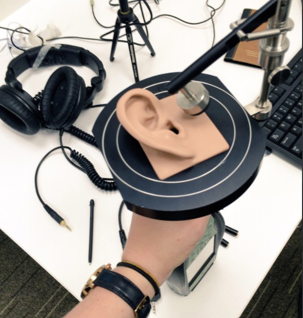

I am sure, like most of us, you have. Perhaps you are even being distracted right now. Whilst reading this you might be filtering out background sounds or supressing the urge to respond an email pop up in the corner of your screen. In my PhD I intend to understand the brain mechanisms used to ignore these types of every-day, multisensory distractions. Furthermore, how is it children, and older adults, at different stages of neural development perform this essential cognitive task?
So how did I recently find myself traveling to the other side of the world (Sydney, Australia) to help answer this question? The answer lies in improving methodology for studying brain activity in real world environments with children. Like many cognitive researchers I utilise electroencephalography (EEG) to measure the brains responses to distractions. The responses we measure are known as event-related potential (ERP) because they signal the brains responses to an event. Unfortunately typical EEG has its limitations; it is time consuming, expensive and potentially intimidating for those not familiar with the lab. With anything from 32-120 electrodes that need to be individually connected with skin preparation scrub and gel, set-up can take 30-60 minutes per participant (before you start your experiment!). Typical EEG also requires an electrically shielded lab environment, which can be intimidating for children and require participants to travel to you. These factors can limit sample sizes, which is bad news for large-scale lifespan research.
When my supervisor informed me that a colleague of hers, Dr Nic Badcock, at Macquarie University, Sydney, had been validating new technology for measuring brain activity in children, I was keen to be involved. Specifically, the team at Macquarie University had been using commercially available EEG, typically used for gaming. This technology is considerably cheaper than research grade equipment, portable, and can be set up in less than 10 minutes. Should this technology be capable of producing research quality data the value of this to cognitive science, and my PhD, would be immense. Critically, no other lab in the world had been validating this technology for ERP research. After being introduced to Dr Badcock via Skype we decided to apply for an ESRC overseas institutional visit grant, and was fortunate enough to be successful.
My visit was due to take place from October until December 2017, over an optimistically planned 6 weeks. However, by August, Nic and myself were having weekly Skype meetings to plan and prepare the visit. These meetings were essential, as I was later to discover, 6 weeks is a very short time frame for training in a new methodology, experimental set up, data collection, a conference (at which I would present and chair my first symposium) and analysis. Nevertheless with good planning this all became possible, if a little stressful.
The cognitive science department at Macquarie University was located within the Australian Hearing Hub. A state of the art facility, leading world class research in hearing and language development. I was overwhelmed by the facilities. Week one was devoted to set up and training. When I requested to borrow an artificial ear to calibrate my stimuli I was handed a state of the art model ear (far more high tech than those I had previously handled!), and this was just the start of the new technology I was to gain experience with! I was trained with a completely new research grade EEG system, which I had never used before, Neuroscan, alongside the portable set up I had travelled across the world for, Emotiv. Being a validation project, the portable EEG had to be set up over the top of the research grade system (which was very fiddly and took a lot of getting used to!).
The first few weeks of training and data collection were very busy. Recruiting and testing enough participants in 3 weeks following my training week was challenging. We needed ~30 participants and testing lasted about 2 hours per participant, so a lot of time was spent in the lab. The limited time frame also meant that when technical difficulties occurred, as will always happen in research, I had to think on my feet and power through rather than postponing any data collection. Fortunately, I had the support Nic and the other staff and students at Macquarie throughout. This supportive environment definitely helped me pick up a lot of skills in a short space of time and with this support I completed my project in good time.
During my visit I also had the opportunity to attend the Australasian Cognitive Neuroscience Society conference in Adelaide. Nic and I organised and co-chaired a symposium entitled “cognitive control from the cradle to the grave”. This gave me the opportunity to meet Frini Karayanidis, Newcastle University, and Ashleigh Smith, The University of South Australia. Frini and Ashleigh had both been working on different aspects contributing to cognitive control in adolescents and older age respectively. Organising a symposium was a really good way of getting to meet speakers whose research was of direct interest to my own field. I would definitely recommend organising a symposium to other early career researchers!
As I mentioned my project was only 6 weeks long and preparation in advance was essential. Ask the supervisor you will be working for if there is anything administrative that can be done before arrival (ethics applications, registering with the university, accessing participant pools and booking necessary training).
2. Be realistic in your time-scalesMy supervisors advised me to make a detailed gantt chart as part of my application. This gantt chart was incredibly helpful in ensuring I stick to plan, but remember to factor in time for potential problems! I made incredibly optimistic goals and although I was able to complete these goals within the time frame it was a challenge. Try emailing other students to find out what the standard project time-scale is at that institution (taking into account factors such as how many others are using the lab/data-base at the time and participant drop out rates!).
3. Organise a symposium!When Dr Badcock suggested we organise a symposium I found this a little daunting. However this was actually a really good way of tailoring a conference to your own needs as well as meeting new people and getting your own research out there. Even if this idea seems scary I would say go for it!
4. Making friends is "networking""Networking" is the word most academics seem awkward about. This is because it sounds like there is an ulterior motive underlying every conversation. Also, going straight up to the "big wigs" and introducing yourself can be intimidating. Start by making friends, for me this has lead to making some really useful connections - who usually turn out to be connected to "big wigs" anyway!
5. Keep calm and remember to have fun.This point may sound cliche but it is nevertheless important. If I said I never felt isolated or anxious during this visit I would be lying. This was my first real experience of working away from my family and friends for an extended period of time, and the pressure of learning a lot in a short time-frame can be intense. However putting myself in new situations I made friends. I also made sure to take time to explore Sydney. Even with limited time, taking time to take care of yourself and your mind can actually increase productivity!
This blog post was adapted from a report submitted to the Economic and Social Research Council. You can read the original report here